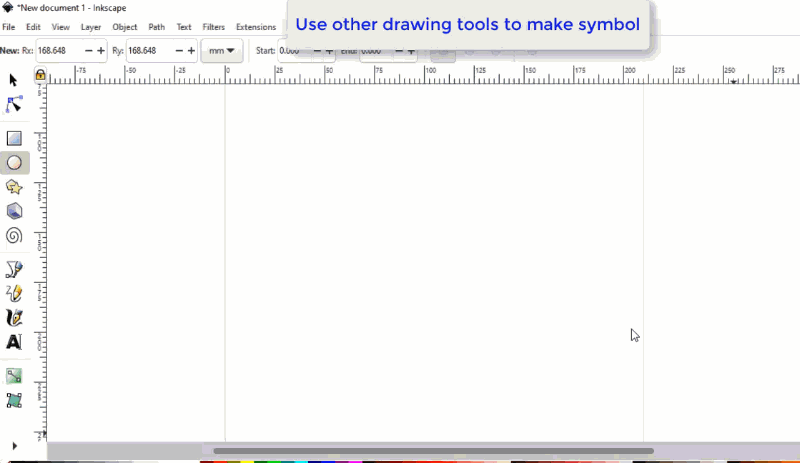

FAQ-1109 散布図のユーザ定義シンボルを作成するには？
Create-User-Defined-Symbol
最終更新日：2021/11/30
組み込みのシンボルリスト（作図の詳細ダイアログ> シンボルタブ）で使用したいシンボルが見つからない場合は、他のツールで自作したシンボルや、オンラインで検索したシンボルをOriginで使用することができます。
方法1: 他のツールでシンボルを作成してOriginにインポート
- ほかのイラストソフトウェアを使ってシンボルを作成します。
- *.SVG または *.BMP ファイルとして保存します。

- Originにユーザ定義シンボルをインポートします。以下のように操作します。
- 環境設定：オプションを選択します。
- オプションダイアログのグラフタブで、空のセルをクリックしてCTRL + Fキーを押し、ファイルブラウザを開きます。保存したシンボルファイルを選択します。
- OKをクリックして、ダイアログを閉じます。
- これで、作図の詳細ダイアログのシンボルタブや、ミニツールバーのシンボルの形状ボタンで、ユーザ定義シンボルを選択できるようになります。

方法2: オンラインで検索したシンボルをOriginで使用
- 使用したいシンボルをオンラインで検索します。
- シンボルの画像を右クリックして、ショートカットメニューから画像をコピーを選択します。
- Originに戻ります。シンボルをダブルクリックして、作図の詳細ダイアログを開きます。
- シンボルタブで、カスタムコンストラクションにチェックを付け、ユーザ定義シンボルを選択します。クリップボードから追加ボックスに、オンラインでコピーした画像が表示されているのを確認します。クリックしてシンボルを選択します。
- OK をクリックしてシンボルを適用します。
-
キーワード:ユーザ定義シンボル, svgシンボル, カスタムシンボル